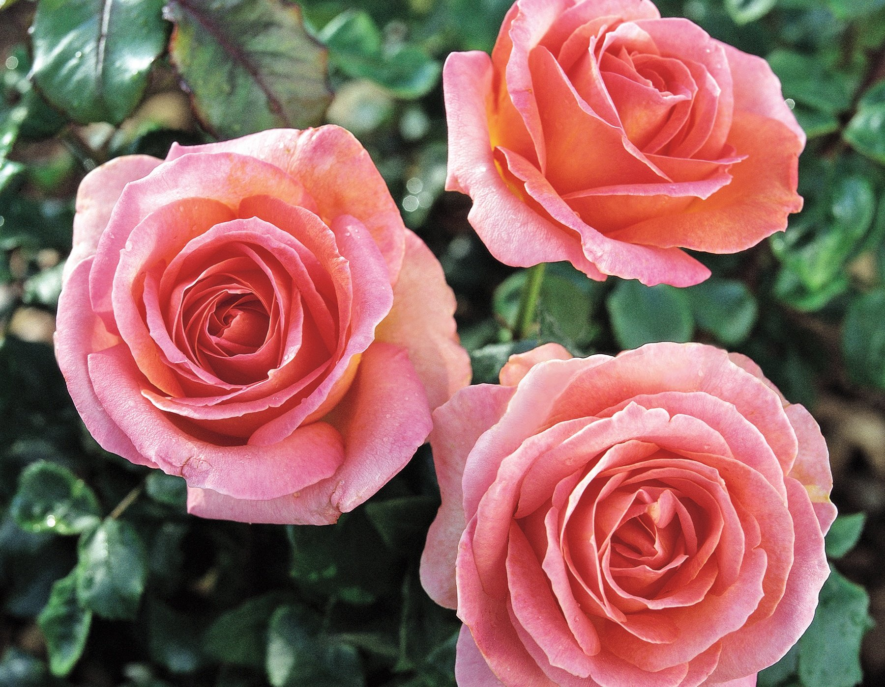

DOG
The dog is a domesticated descendant of the wolf. Also called the domestic dog, it is derived from extinct Pleistocene wolves, and the modern wolf is the dog's nearest living relative.

FLOWER
A flower, sometimes known as a bloom or blossom, is the reproductive structure found in flowering plants.

Car
The Renault Kwid is a crossover city car[3] produced by the French car manufacturer Renault, initially intended for the Indian market and launched in 2015.[4][5][6] In 2017, an improved Brazilian version was introduced for Latin American markets.

ROSE
Garden roses are predominantly hybrid roses that are grown as ornamental plants in private or public gardens